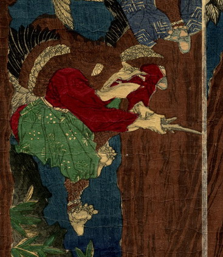

飛び上がり剣を振る烏天狗。頭から背にかけて羽毛に覆われており、羽がある。口が猛禽類の嘴のように尖っている。
著作者：月岡米次郎／出典：親書誌：U426_nichibunken_0232：鞍馬山僧正蹊牛孺麿撃刀練麿之圖；クラマヤマソウジョウダニニウシワカマル ゲキトウレンマノズ／日付：2010／資源識別子：U426_nichibunken_0232_0002_0000
Copyright (c)2010- International Research Center for Japanese Studies, Kyoto, Japan. All rights reserved.